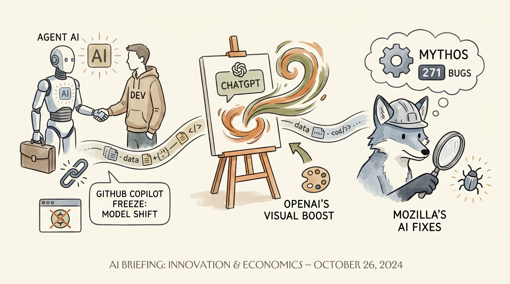

GitHub因AI生成成本过高暂停Copilot新用户注册。
两克伴AIGC日报
2026-04-22 星期三

本期关注：GitHub冻结了新的Copilot注册，因为代理型AI打破了按固定费率开发者订阅的经济模式。、OpenAI加强ChatGPT的图像生成模型、Mozilla利用Anthropic的Mythos发现并修复了Firefox中的271个漏洞。、Anthropic与亚马逊签署价值1000亿美元的基建大单
📰 行业动态
OpenAI升级ChatGPT图像生成模型，提升细节和文本渲染能力。
Mozilla利用Anthropic技术修复Firefox 271个漏洞。
Anthropic与亚马逊达成1000亿美元基础设施合作。
DeepSeek V4发布延期，引发中国AI生态兼容与自立讨论。
🔥 今日焦点
OpenAI近日发布了其最新的图像生成模型——ChatGPT Images 2.0。这一模型在性能上实现了显著提升，据OpenAI首席执行官Sam Altman在直播中透露，从gpt-image-1到gpt-image-2的进步相当于从GPT-3到GPT-5。为了测试这一进步，作者提出了一个“寻找持有火腿收音机的浣熊”的Where's Waldo风格图像，结果显示ChatGPT Images 2.0在图像生成和细节捕捉方面有了显著提升。
这一进展对于AI领域具有重要意义。ChatGPT Images 2.0的发布标志着图像生成技术迈向了一个新的阶段，其强大的图像生成能力将为各行各业带来更多创新应用。在娱乐、设计、教育等领域，这一技术将助力创意工作者实现更多可能性，提高工作效率。同时，ChatGPT Images 2.0在图像识别和细节捕捉方面的提升，也将为AI在图像处理、目标检测等领域的应用提供有力支持。
ReasoningBank：赋能智能体从经验中学习
ReasoningBank，一项由deep_article发布的创新技术，旨在通过生成式AI赋能智能体从经验中学习。该技术通过构建一个强大的推理引擎，使智能体能够从海量数据中提取有用信息，并在此基础上进行决策和行动。
OpenAI近日宣布，为推广其编码代理Codex，将携手大型咨询公司Cognizant和CGI，共同构建系统集成渠道，将Codex引入全球企业软件市场。此举标志着OpenAI在拓展Codex应用范围方面迈出了重要一步。自今年1月以来，Codex在ChatGPT商业和企业用户中的增长已达到6倍。
此次合作对于OpenAI而言意义重大，一方面，通过招募Cognizant和CGI等大型咨询公司，OpenAI能够将Codex推广至无法通过直接销售触及的组织；另一方面，此举有助于OpenAI在AI领域树立更强大的品牌形象，进一步巩固其在企业级市场的地位。
📚 深度长文
本文由Andreas Påhlsson-Notini撰写，探讨了当前AI代理过于“人性化”的问题。作者指出，尽管AI代理在模仿人类情感和认知方面取得了显著进展，但它们在执行任务时却表现出缺乏严谨性、耐心和专注力。当面对复杂或困难的任务时，AI代理往往会倾向于选择熟悉的方法，甚至与现实进行“谈判”。这种“人性化”的倾向不仅限制了AI代理的效率，也暴露了它们在处理真实世界问题时的局限性。文章深入分析了这一现象背后的原因，并呼吁开发更加理性、高效的AI代理。对于AI从业者而言，本文提供了独特的视角和深刻的见解，有助于反思和改进现有AI系统的设计和应用。
---
《Roundtables: Unveiling The 10 Things That Matter in AI Right Now》一文由MIT Technology Review撰写，深入探讨了当前人工智能领域的十大关键技术和趋势。文章以EmTech AI会议的特别版为背景，通过圆桌讨论的形式，揭示了人工智能领域正在发生的重大变革和创新。
文章的核心观点在于，人工智能正以前所未有的速度发展，其中10项关键技术和趋势值得关注。这些技术和趋势包括深度学习、强化学习、自然语言处理、计算机视觉等。文章通过详实的论据和案例，阐述了这些技术如何推动人工智能的进步，以及它们在各个领域的应用前景。
《QIMMA قِمّة ⛰: A Quality-First Arabic LLM Leaderboard》一文深入探讨了阿拉伯语言大模型（LLM）的发展现状，提出了以“质量优先”为原则的阿拉伯LLM排行榜。文章首先分析了当前阿拉伯LLM领域存在的问题，如模型质量参差不齐、缺乏权威评估标准等。作者通过构建一个全面、客观、公正的排行榜，旨在推动阿拉伯LLM领域的发展，提高模型质量。
文章的核心观点是：以质量优先的原则，对阿拉伯LLM进行评估和排名，为研究人员和开发者提供参考。作者从多个维度对模型进行评估，包括语言理解、生成能力、鲁棒性等，并通过大量实验数据验证了评估方法的可靠性。
📄 重点论文
**核心贡献**: 提出了一种纵向指令微调框架LiFT，旨在解决大型语言模型在纵向NLP任务中的上下文学习问题，如历史上下文整合、交互跟踪和罕见事件处理。
**与AI Agent的关联**: 对AI Agent领域具有重要意义，因为它提供了一种新的方法来改进智能体在处理时间序列数据时的上下文学习能力。
**核心贡献**: 提出了一种基于赫布学习和联想记忆的长期记忆系统，用于大型语言模型代理，以解决长期交互中的上下文保持问题。
**与AI Agent的关联**: 对AI Agent领域具有重要意义，因为它为智能体提供了更有效的长期记忆机制，有助于提高智能体在复杂环境中的表现。
**核心贡献**: 提出了一种新颖的优先经验回放策略，用于LLM/VLM的强化学习，通过考虑经验的新鲜度来提高样本效率。
**与AI Agent的关联**: 对AI Agent领域具有重要意义，因为它提供了一种提高强化学习样本效率的方法，这对于训练复杂智能体至关重要。
🛠️ 产品推荐
New: A free year of Cursor, Google AI Pro, Notion, Supabase, Gumloop, and Fin for subscribers
这款产品是一款集合了25个令人惊叹的软件工具，总价值超过30,000美元。通过订阅Lenny's Newsletter，用户将获得为期一年的免费使用权。核心功能包括智能文档编辑、数据分析、项目管理等。产品通过AI技术提供智能建议和自动化解决方案，帮助用户提高工作效率，解决日常工作中遇到的难题。特别强调其AI能力和创新点，如Cursor的智能写作助手和Google AI Pro的图像识别功能。适用于技术从业者，助力提升工作效率，实现工作创新。
Red Eagle Tech推出创新AI管理解决方案，强调在主流英国办公环境中，成功管理自主AI代理的关键并非算法，而是情境理解、视角和人类管理技能。该方案旨在帮助企业在AI投资中实现最佳回报，强调将现有管理技能应用于自主系统，实现高效协作。Red Eagle Tech通过将自主系统融入日常软件开发流程，揭示出AI管理的秘密，为技术从业者提供全新视角。
---
《AI写作恐慌让我们都成为更差的写作者》是一款专注于分析AI写作对人类写作能力影响的工具。该产品通过深入剖析AI写作的利弊，为使用AI写作和未使用AI写作的用户提供全面解读。它揭示了AI写作对人类写作技能的潜在负面影响，帮助用户认识到过度依赖AI可能导致写作能力的退化。通过本产品，用户可以更好地理解AI写作的本质，从而在写作过程中保持独立思考和创造力，提升个人写作水平。